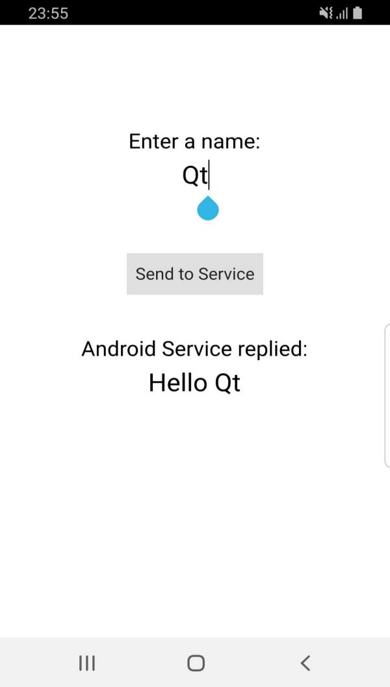

Android Service with Qt Remote Objects - Same Lib File
Demonstrates how to run an Android service in a separate process using the same lib file, and how to communicate between the service process and the main process using Qt Remote Objects.

This example demonstrates how to create and run an Android service in a separate process from the main application process, and then exchange data between QML/C++ and the Java service using Qt Remote Objects.
When clicking the Send to Service button, the name entered in the QML view, Qt, in this case, is sent to the Android service. Then, the service replies back with a message Hello Qt which is printed in the QML view.
Running the Example
To run the example from Qt Creator, open the Welcome mode and select the example from Examples. For more information, visit Building and Running an Example.
Create the Service
To start a service in its own process, you can extend the QtService class for your service. Extending QtService allows the service to load the necessary Qt libraries used for Qt, like Qt Remote Objects libraries.
Start by creating the Java service class. The following class extends QtService and acts as your service entry point:
package org.qtproject.example.qtandroidservice;
import android.content.Context;
import android.content.Intent;
import org.qtproject.qt5.android.bindings.QtService;
import android.util.Log;
public class QtAndroidService extends QtService
{
private static final String TAG = "QtAndroidService";
@Override
public void onCreate() {
Log.i(TAG, "Creating Service");
super.onCreate();
}
@Override
public void onDestroy() {
Log.i(TAG, "Destroying Service");
super.onDestroy();
}
}
This class can have any logic you want using Java code. However, you don't need any logic to communicate with Qt as that will be done using Qt Remote Objects.
Manage the AndroidManifest.xml File
To be able to use the service, it must be declared in the AndroidManifest.xml file as follows:
<service android:process=":qt_service" android:name=".QtAndroidService">
<!-- Application arguments -->
<meta-data android:name="android.app.arguments" android:value="-service"/>
<!-- Application arguments -->
<meta-data android:name="android.app.lib_name" android:value="-- %%INSERT_APP_LIB_NAME%% --"/>
<meta-data android:name="android.app.qt_sources_resource_id" android:resource="@array/qt_sources"/>
<meta-data android:name="android.app.repository" android:value="default"/>
<meta-data android:name="android.app.qt_libs_resource_id" android:resource="@array/qt_libs"/>
<meta-data android:name="android.app.bundled_libs_resource_id" android:resource="@array/bundled_libs"/>
<!-- Deploy Qt libs as part of package -->
<meta-data android:name="android.app.bundle_local_qt_libs" android:value="-- %%BUNDLE_LOCAL_QT_LIBS%% --"/>
<!-- Run with local libs -->
<meta-data android:name="android.app.use_local_qt_libs" android:value="-- %%USE_LOCAL_QT_LIBS%% --"/>
<meta-data android:name="android.app.libs_prefix" android:value="/data/local/tmp/qt/"/>
<meta-data android:name="android.app.load_local_libs_resource_id" android:resource="@array/load_local_libs"/>
<meta-data android:name="android.app.load_local_jars" android:value="-- %%INSERT_LOCAL_JARS%% --"/>
<meta-data android:name="android.app.static_init_classes" android:value="-- %%INSERT_INIT_CLASSES%% --"/>
<!-- Run with local libs -->
<!-- Background running -->
<meta-data android:name="android.app.background_running" android:value="true"/>
<!-- Background running -->
</service>
The important parts of this service declaration are the arguments and lib_name parts. Those will ensure that the service is run by executing the lib file of the main activity with the argument -service:
<!-- Application arguments -->
<meta-data android:name="android.app.arguments" android:value="-service"/>
<!-- Application arguments -->
<meta-data android:name="android.app.lib_name" android:value="-- %%INSERT_APP_LIB_NAME%% --"/>
Handle the Application Start
Since the same .so lib file is being used for the application and the service, you need to handle both scenarios in the main() function. No arguments are provided to start the main application, and therefore you must add the following in the main() function:
if (argc <= 1) {
Then calling the following function starts the service:
void startService() { QAndroidIntent serviceIntent(QtAndroid::androidActivity().object(), "org/qtproject/example/qtandroidservice/QtAndroidService"); QAndroidJniObject result = QtAndroid::androidActivity().callObjectMethod( "startService", "(Landroid/content/Intent;)Landroid/content/ComponentName;", serviceIntent.handle().object()); }
Handle the Service Start
QAndroidService is used to create the service process. The main .so lib file will be called with an argument to start the service if you add the following code:
} else if (argc > 1 && strcmp(argv[1], "-service") == 0) {
Communication with Qt Remote Objects
To use Qt Remote Objects, define a .rep file:
class QtAndroidService {
SLOT(void sendToService(const QString &name));
SIGNAL(messageFromService(const QString &message));
}
Define the .rep source and replica file in your project .pro file as follows:
REPC_SOURCE += ../common/qtandroidservice.rep REPC_REPLICA += ../common/qtandroidservice.rep
Then define the class used by Qt Remote Objects, which has a sendToService() slot and a messageFromService() signal:
#include "rep_qtandroidservice_source.h" class QtAndroidService : public QtAndroidServiceSource { public slots: void sendToService(const QString &name) override { emit messageFromService("Hello " + name); }; };
Include the class in the previous snippet in main.cpp:
#include "rep_qtandroidservice_replica.h"
Now, inside the service handling part, create the QRemoteObjectHost node:
QRemoteObjectHost srcNode(QUrl(QStringLiteral("local:replica")));
QtAndroidService qtAndroidService;
srcNode.enableRemoting(&qtAndroidService);
Then, in the application handling part, create the client node and connect it to the source node created in the service and connect it to the QML view:
QRemoteObjectNode repNode;
repNode.connectToNode(QUrl(QStringLiteral("local:replica")));
QSharedPointer<QtAndroidServiceReplica> rep(repNode.acquire<QtAndroidServiceReplica>());
engine.rootContext()->setContextProperty("qtAndroidService", rep.data());
bool res = rep->waitForSource();
Q_ASSERT(res);
rep->sendToService("Qt");
Then, add a Connections element to watch for the incoming messages from the service:
Connections {
target: qtAndroidService
function onMessageFromService(message) {
pongText.text = message
}
}
And set the onClicked for the sending button to:
onClicked: qtAndroidService.sendToService(pingText.text)
See also Android Service with Qt Remote Objects, Android Services, Qt for Android, and Qt Android Extras.